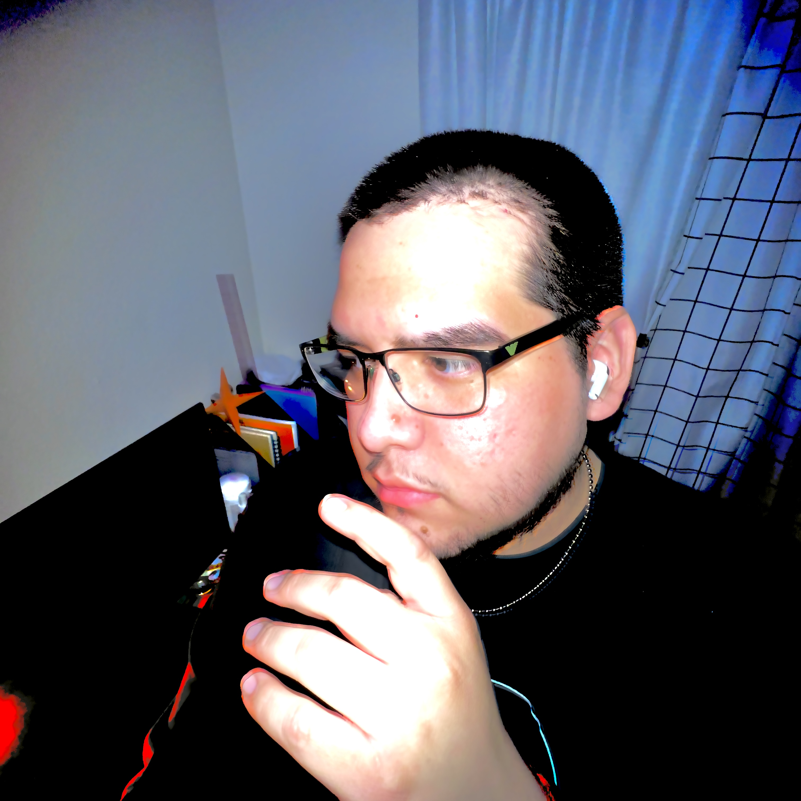

Born and raised in Phoenix, Arizona, Samuel likes to take inspiration from all things that have a unique design and presence. As a Latino, Samuel takes advantage of his inspiration from his culture and ethnicity. As a member of the LGBTQA+ community, Samuel also finds ways to make his art about inclusivity and bringing people together through art and design. As he grows older, he looks for new inspirations and opportunities for staying with the culture. Samuel Serrano usually uses He/Him/His pronouns, but any pronoun is fine with him.
Samuel V Serrano (Sam V Serrano) is a designer that specializes in all forms of designs. Samuel began his journey at 22, attending Glendale Community College in Glendale Arizona, focusing on graphic design. Ever since he was a child, he participated in the arts whether it was music, painting, or story writing. Samuel currently attends Arizona State University, in the Ira A. Fulton Schools of Engineering, and majoring in the Graphic Information Technology. Samuel has a focus on UX Design and Website creation. However, he also takes part in graphic design and 3D modeling. Since at ASU, Samuel has taken many accelerated courses on website design and development. He's learned the basics of HTML, CSS, and Javascript. Back in 2007, when MySpace was the current popular social networking site, he had some basic knowledge on HTML and CSS. Samuel currently lives in Phoenix, Arizona with his pet cat, Raven. When Samuel is not working, you can find him reading about art history and working digital drawing through Procreate on his iPad or watercolor painting on a sketchbook. Samuel does enjoy playing video games, listening to music, and learning about photography.